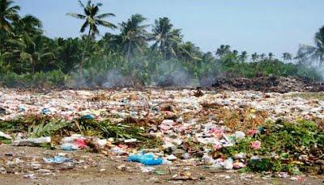

SOIL POLLUTION

In a general sense, soil pollution definition is the presence of toxic chemicals (pollutants or contaminants) in soil in high enough concentrations to be of risk to human health and/or ecosystem. Additionally, even when the levels of contaminants in soil are not of risk, soil pollution may occur simply due to the fact that the levels of the contaminants in soil exceed the levels that are naturally present in soil (in the case of contaminants which occur naturally in soil).
Causes of Soil Pollution:
1.Agriculture: The use of chemicals as part of agriculture is at record levels.
2.Industry: The biggest culprit in soil pollution is industrial activity.
3.Human Waste: We also damage the soil as part of our everyday lives.
3.Deforestation: Deforestation has an indirect effect on soil pollution.
4.Acid Rain: Acid rain occurs when pollutants in the air such as sulfur dioxide and nitrogen oxide mix with rain.